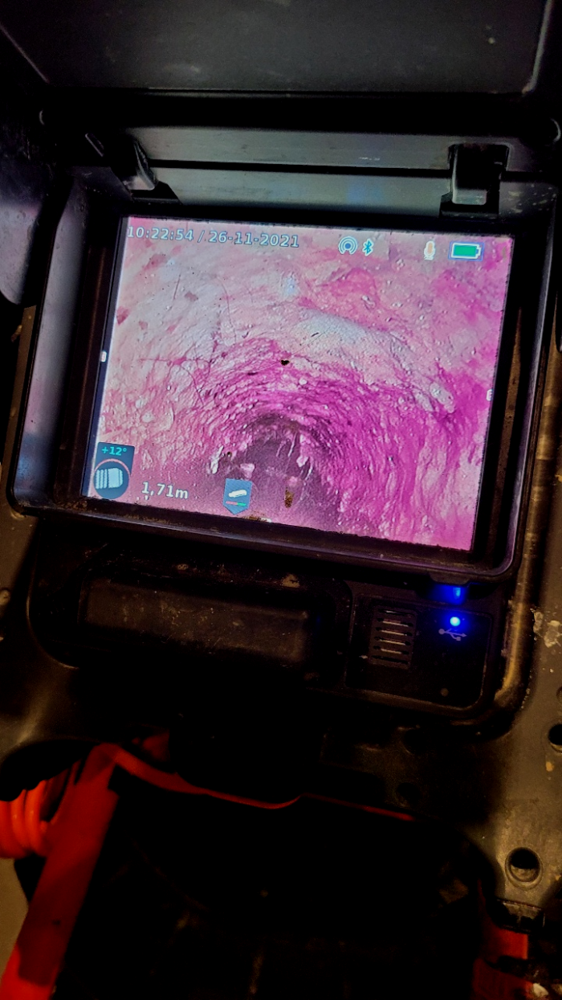
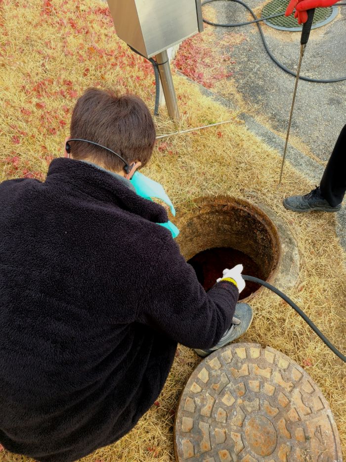
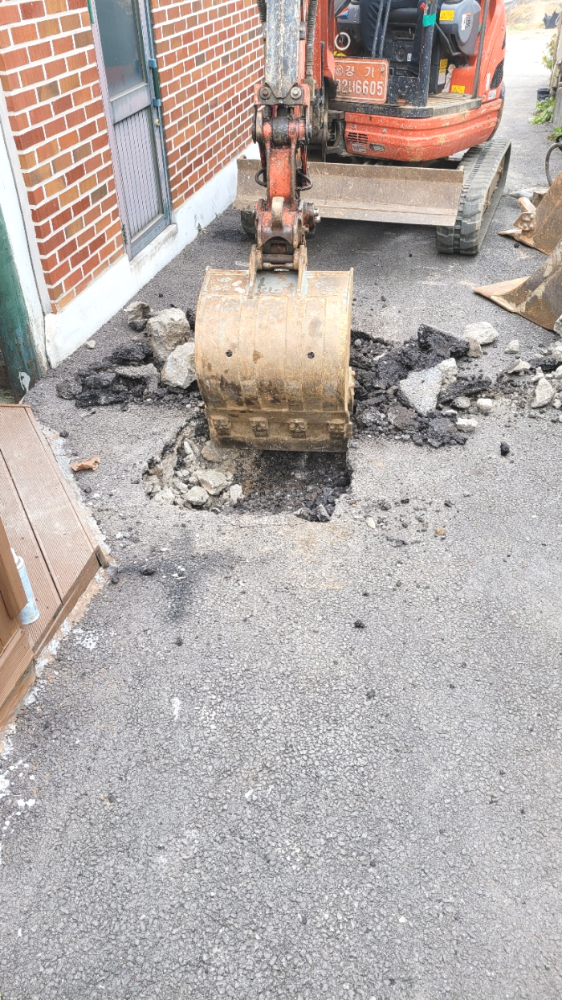
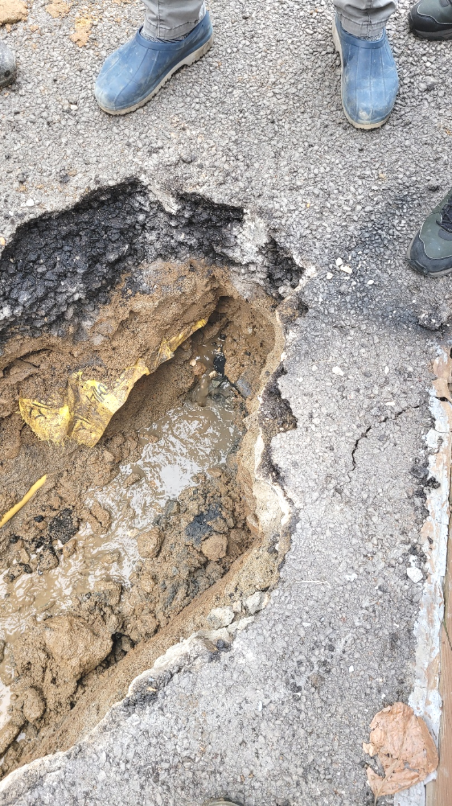
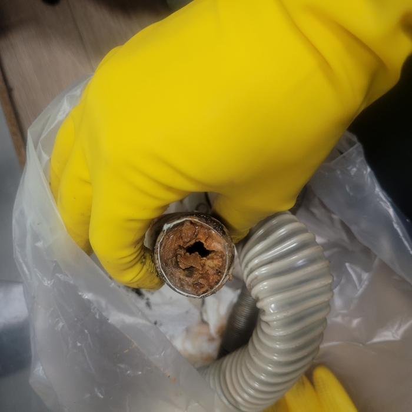
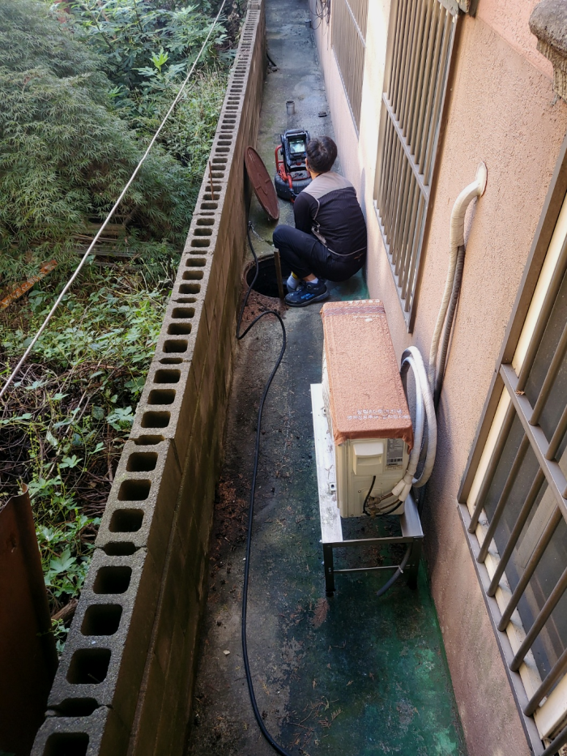

🏠 양주 유양동 싱크대배수관막힘 산북동 배수구역류 뚫는곳 설비
양주 유양동 싱크대막힘 전문 시공 후기

📋 작업 개요
- 위치: 양주 유양동, 유양동, 양주
- 서비스 유형: 싱크대막힘, 변기막힘, 하수구막힘, 배관막힘, 누수수리, 역류해결, 뚫는업체, 배관청소, 고압세척
- 작업 일시: 2024. 2. 11. 17:23
- 업체명: 하수구수사대 (010-5615-2118)
🔍 문제 상황
반갑습니다^^
설비전문업체 "하수구수사대"를 찾아주셔서 감사합니다^^
항상 사용하는 집안에서 하수관 막히는 문제가 발생했다면 총알처럼 방문해서 뚫어드리고 있어요. 하수관작업 문의량이 많아서 조금 더 만족시켜 드릴 수 있도록 성심성의껏 최선의 힘을 다하고 있는데요. 정도가 심각하여 하수관 물이 새는 현상까지 보이더라도 걱정하지 마세요
저희는 다른 곳에서 실패한 현장도 한번에 해결한다는 것이 입수문이 퍼지기 시작하면서 연락주시는 분들이 늘어나고 있습니다.
양주 유양동 싱크대배수관막힘 산북동 배수구역류 뚫는곳 설비

🔎 원인 분석
💡 전문가 진단: 양주 유양동 싱크대배수관막힘 산북동 배수구역류 뚫는곳 설비
문제가 발생하면 빠른시간에 출장 작업이 가능한 하수관업체와 최신장비를 갖춘 업체를 똑똑하게 선정하셔야합니다. 배관 초입을 비롯하여 배관 내부에 이르기까지 세세하게 보는게 가능한 배관내시경이 기본장비인데 이 장비조차 없는 업체들이 있으지 조심하세요.
하수관전문가에게 도움을 받으려 해도 얼마가 들지 모르기 때문에 고민이 되는 게 당연하시겠지만 시간이 흘러갈수록 비용도 늘어나기 때문에 증상이 발견되었을 때 당장 고칠 생각이 없더라도 얼마나 심각한 것인지 견적 정도는 받아보시는 것을 추천드립니다.
집이 연식이 있는 집이다 보니 이런 오래된 건물들은 대부분 바닥 아래 하수관 배관이 변기와 세면대, 바닥 하수관 배관까지 모두 한 곳으로 이여 져있는 형태로 되어있습니다. 그렇기 때문에 더욱 복잡한 과정으로 이어질 수 있으니 어떠한 원인으로 하수관가 막히게 되었는지 꼼꼼하게 확인하는 과정이 매우 중요합니다.
서둘러서 저희가 꼼꼼하게 해드리지 않고 천천히 내시경카메라를 보면서 작업을 해드리면서 마무리를 지었습니다. 노커체인을 퇴수 안에 이무질이 있는곳으로 넣고 난 뒤에 시작을 한 현장이었습니다. 일반적으로 하는 일은 아니지만 십년넘은 경력으로 꼼꼼하게 해드렸습니다.
배출구구조와 막힘 정도는 현장에따라 다르기 때문에 기본 작업비용이나 기본적이 소요시간 정도는 상담을 통해 안내가 가능하지만 추가적인 작업에 필요한 경우에는 꼭 현장 견적을 통해 안내드리는 것이 정확합니다.

🔧 작업 과정
이는 내시경으로도 문제를 찾을 수 없을 때 막혀있는 배출관 구간을 찾아주는 정밀 기계로 구비하고 있는 업체가 별로 없기에 이런 사태를 해결할 수 있는 저희에게 도움을 요청하시는 게 좋은 결과를 도출할 수 있습니다.
배출구막힘 부분을 해결하기 위해서 샤프트 장비를 사용하기로 하였고 배관 아래에 넣어 이물질들을 빠르게 분쇄 진행하였습니다. 이 장비를 사용하는 이유로는 배출구내부 벽면에 달라붙어있는 부분까지 깔끔하게 제거하면서 배관 내 상태를 최적의 상태로 만들어주기 위함인데요
고객님들이 불편사항이있어 서둘러방문하면 다른업체에서 제대로수리를하지않은 배수관 전문배관기사도 때떄로있어요 원인진단을해볼때 이물질들을완벽히 청소하지않은채로 배수만가능하게하는 통수작업만 하고나서 마무리를짓는경우도 보았습니다
말도없이견적가를 청구하는것이아닌 무엇때문에 견적비용이 청구됐는지 전문배관공과같이 퇴수내시경화면을 보여드리면서 상황에관해 설명드리고있어요
배관막힘 건축물바깥에 배출되지않고 집안쪽에 누수가발생되기에 장판을상하게하면서 아랫세대쪽에도 문제가발생됩니다,다같이이용하는 공동하수관이면 같은건물사람들이 사용하지못하기에 모든부분에서 손해가발생돼요.
흡입과정이 끝나면 석션기통을 통하여 퇴수배관에 이물질이 어느 정도 제거되었는지 확인할 수 있습니다. 석션기통을 열어보면 상당히 많은 이물질이 제거된 것을 볼 수 있기 때문입니다. 굴곡이 있는 엘보 부분은 석션기만으로는 해결할 수 없기에 다른 퇴수장비를 사용해 주어야 합니다.
일반 가정집은 하수관배관이 약한 편이라 수압이 강한 고압세척기로 씻어내지 않고 통수만으로도 충분하지만 메인 배관과 같은 넓고 큰 배관은 고압세척기가 정말 시원하게 씻어내줍니다. 통수를 해서 확인을 하고 관로 탐지기로 막힌 곳이 뚫린 것을 확인하고 난 뒤 다시 내시경 장비로 배관 안을 넣어 작업 전 모습과 비교를 해봅니다.
누차 말씀드리지만 하수관 설계는 복잡스럽기 때문에 일반적인 분들은 무턱대고 헤집는 것을 꼭 삼가셔야만 합니다.또 다른 예시로는 고장을 확인하시고서도 별생각 없이 내버려 두셨다가 점점 심각해져서 수리비가 늘어나기도 합니다.


✅ 작업 완료
막힌 퇴수구를 내시경으로 정밀한 진단을 진행한 뒤에 그에 대해서 설명을 해드리면서 퇴수구막힌 부분을 뚫어드리고 있습니다. 도움이 필요하시다면 요일 상관없이 언제든지 편안하게 문의를 해주시면 현장으로 1시간 내로 달려가 문제 있는 퇴수구 막힘을 해결해 드리겠습니다!
#하수구막힘 #하수구뚫음 #하수구역류 #씽크대막힘 #싱크대역류 #오수관막힘 #하수구청소 #욕실하수구막힘 #변기막힘 #하수구뚫는비용 #싱크대수리 #화장실막힘




⚠️ 베란다 누수 및 방수 관리 방법
- ✅ 비가 많이 올 때 창틀 주변이나 아래층 천장에 얼룩이 생기는지 정기적으로 확인해 보세요.
- ✅ 우수관 주변 실리콘 마감이 들뜨거나 깨진 틈새가 있는지 손상 여부를 수시로 체크하세요.
- ✅ 베란다 바닥 타일의 줄눈(메지)이 소실되면 그 틈으로 물이 침투하여 누수가 유발됩니다.
- ✅ 누수 의심 증상 발견 시 방치하면 아래층 손실이 커지므로 즉시 전문가의 진단을 받으십시오.
💡 핵심 정리
- 확실한 장비 작업(내시경 점검 및 샤프트 스케일링)으로 원인을 뿌리 뽑습니다.
- 작업 후 1년 이내에 동일한 부위 재발 시 100% 무상 A/S 서비스를 보장합니다.
- 서울 · 경기 · 인천 전 지역에 24시간 언제든 긴급 출동할 수 있도록 항시 대기 중입니다.
❓ 자주 묻는 질문 (FAQ)
🚨 양주 유양동 싱크대막힘 문제로 고민이신가요?
정확한 원인 진단과 확실한 시공으로 재발 없는 해결을 약속드립니다.
24시간 긴급 출동 | 서울 · 경기 · 인천 전지역 | 1년 내 재발 시 무상 A/S